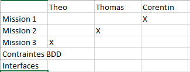

AP2.4 | GSB - GESTION DES FRAIS
Vous devez développer un site web complet pour la M2L. Le cahier des charges pour le développement de la page est donné en annexe.
Mise en commun avec le tableau de synthese
Gérer le patrimoine informatique
on a en tant que ressources numériques : le cahier des charges, ébauche d’application, script SQL, le logo gsb et le diagramme d’utilisation.
une norme a été créer concernant l’application. L’architecture MVC nous est imposé. L’architecture MVC devra être respectée (« controller », « modelDAO », « modelDTO » et « view »)
Le World Wide Web Consortium (W3C) est une organisation internationale qui joue un rôle essentiel dans le développement des normes du Web. Fondé en 1994, le W3C vise à promouvoir un Web ouvert, accessible et interopérable. Il rassemble des experts issus de différents domaines pour développer des recommandations techniques et des standards qui guident le développement du Web. Le W3C est connu pour ses travaux sur des technologies clés du Web telles que HTML, CSS, XML et les protocoles de communication. Son objectif est de garantir l'interopérabilité entre les navigateurs et les appareils, favorisant ainsi un Web cohérent et accessible à tous les utilisateurs.
On a mis en place trois services grâce au cahier des charges. Il y a le visiteurs, comptable et gestionnaires. Puis on a verifié tout cela grâce a la connexion pour voir si les services était bon
Travailler en mode projet
Grace au cahier des charges, une listes des taches nous a été donné. On les a donc analysés pour définir les ressources nécessaires puis on les a mis dans un tableau.
Grace au tableau et aux taches on a donc attribué ce que devait faire les personnes du groupe. Puis cela a permis de nous organiser et réaliser l’AP dans les temps.

Mettre à disposition des utilisateurs un service informatique
Gestion des visiteurs médicaux : L'entreprise compte 480 visiteurs médicaux en France métropolitaine et 60 dans les départements et territoires d'outre-mer. Ces visiteurs médicaux démarchent les médecins, pharmaciens, infirmières et autres professionnels de la santé pour promouvoir les produits du laboratoire.
Équipement informatique : Chaque employé est équipé d'un poste fixe relié au système central. Le site dispose de plus de 350 équipements terminaux, de stations de travail plus puissantes dans la partie labo-recherche et d'un grand nombre d'ordinateurs portables utilisés par le personnel de direction, le service informatique et les services commerciaux.
Gestion des frais des visiteurs : Les visiteurs médicaux soumettent chaque mois une fiche de frais détaillant les dépenses engagées lors de leurs déplacements et de leurs actions de terrain. Les comptables consultent ces fiches pour les valider, et les gestionnaires peuvent intervenir pour les mettre en paiement.
Projet d'application de gestion des frais des visiteurs : Le projet vise à développer une application permettant aux visiteurs, aux comptables et aux gestionnaires d'intervenir sur les différentes étapes du suivi des fiches de frais. À ce stade, seule la partie d'identification/authentification de l'application est opérationnelle, et une interface de visualisation d'une fiche de frais a été conçue. Le développement doit se poursuivre pour répondre à l'ensemble des besoins formulés.